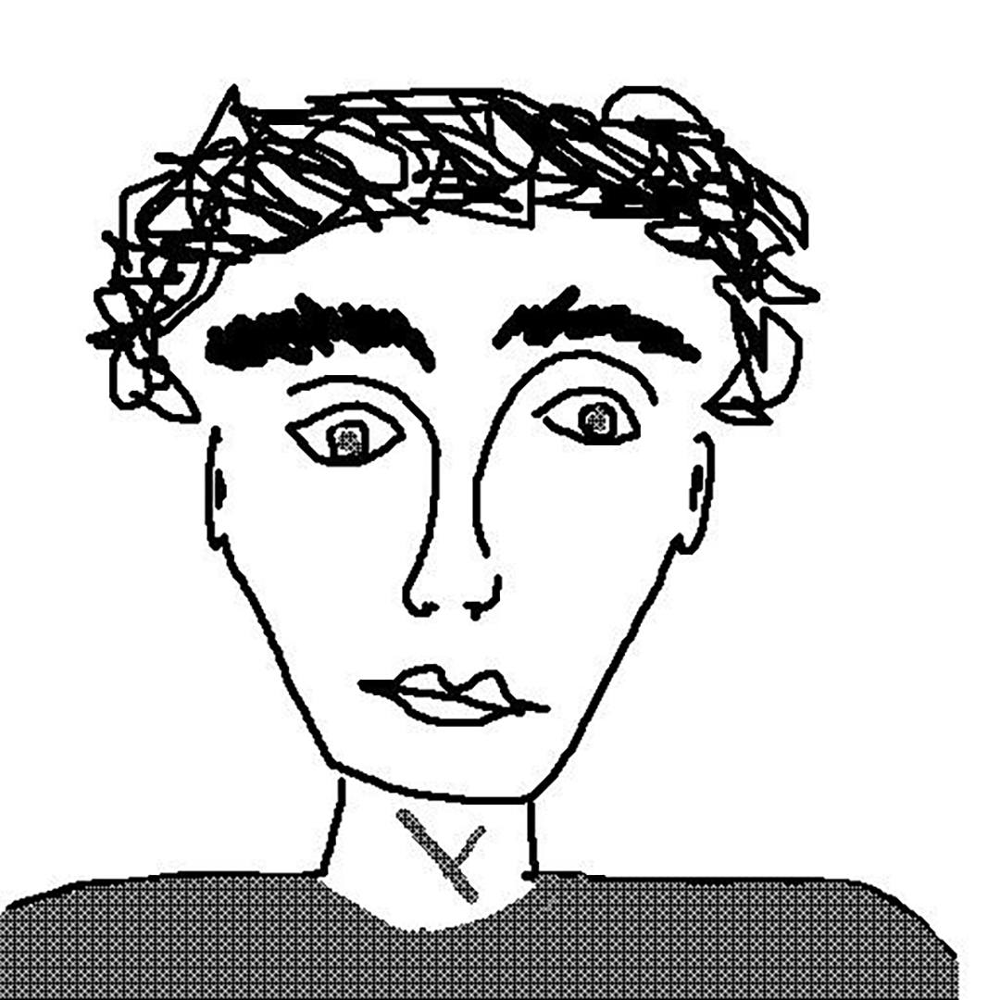

breno samel; designer
Essa ao lado é uma foto minha. Real oficial mesmo. Sou eu. transformado em píxeis, desmaterializado. Fora das telas, eu faço, geralmente, objetos físicos (materiais informados etc. etc.) Geralmente, são roupas, objetos vestíveis de tecido e, por vezes, folhas de madeira. Ou qualquer outra coisa que dê pra usar para este fim. Outras vezes, desenho objetos gráficos: capas de livro, cartazes. Já desenhei mobiliário, máscaras, até mesmo escovas de dente. Agora, pelo visto, sei programar também sites em html. Essa florzinha e a da outra página se movendo por aí fiz em colaboração com um amigo, de uma inteligência, digamos... artificial mesmo. Se quiser ver mais fotos do meu trabalho, ou mesmo de mim, quem sabe, meu insta é @brenosamel. Obrigado :)
← voltar para homepage